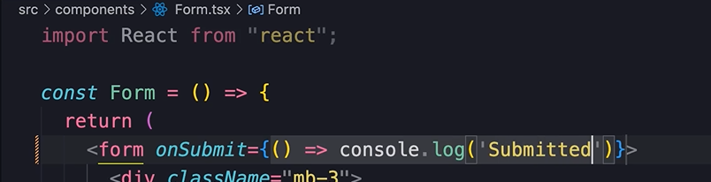
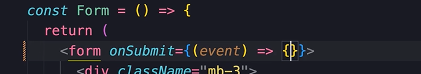
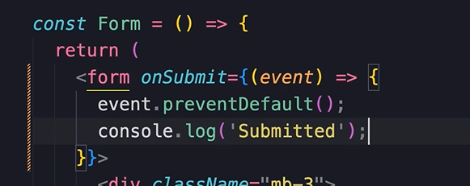
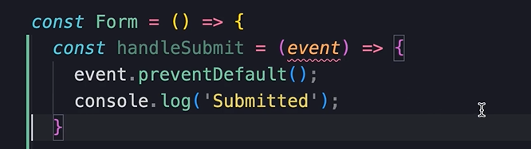
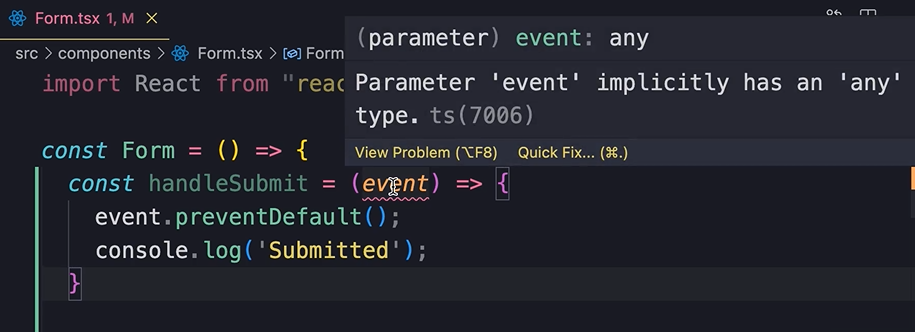
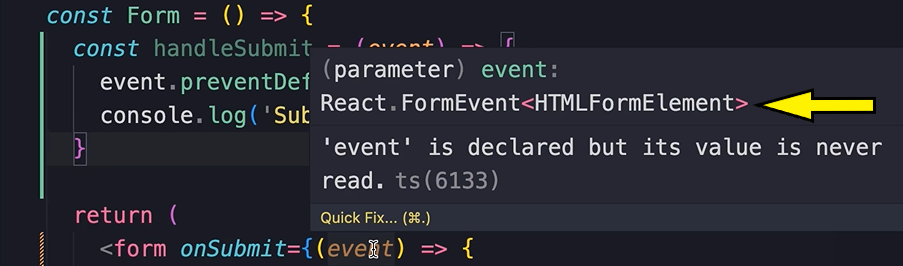
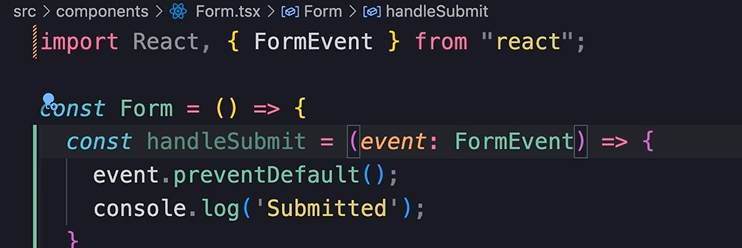
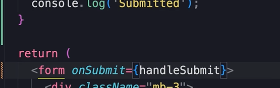

HOME
Handling Form Submission
onSubmit
Let's take the form we just built, and add submission to it.
With forms, the onSubmit attribute is like the onCLick attribute for
buttons...

If you submit the form now, and watch the console, you will see a log
appear and go away quickly.
The log dissapears because when we submit an html form, that form is
posted to the server, so we get a full page reload.
Prevent default behavior
To solve this issue we need to prevent the default behavior.
Add an event parameter, and use braces for multiple lines in the
function...

preventDefault, and console.log...

Now the message should log just fine.
Separate complex logic
Just like handling the event of a button, we should create a separate
function for the submit if the logic gets complex.
For example, we could move it to a handleSubmit...

But, now we get this err...

It's because the Typescript compiler doesn't know the type of the
event.
But, if you hover your mouse here...

You can see the event type is a 'FormEvent'
So, import it, and annotate the event with it...

Finally, reference handleSubmit in the onSubmit...

In the next lesson we will access the values of our input fields.